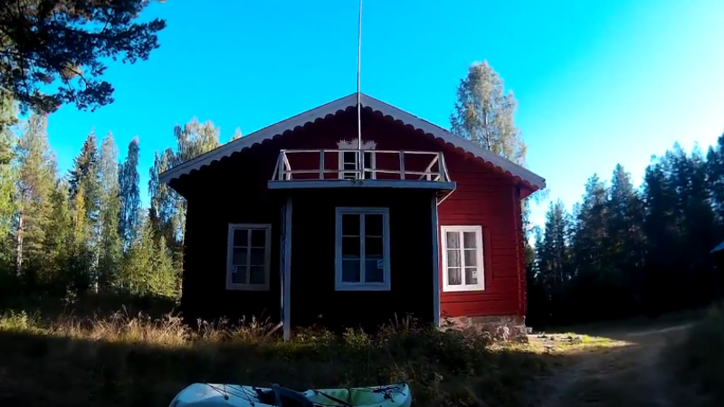
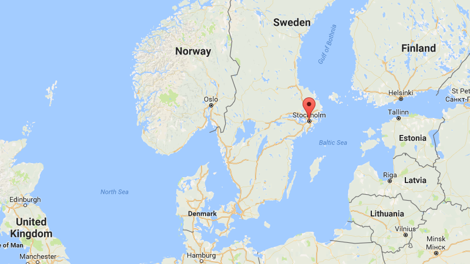
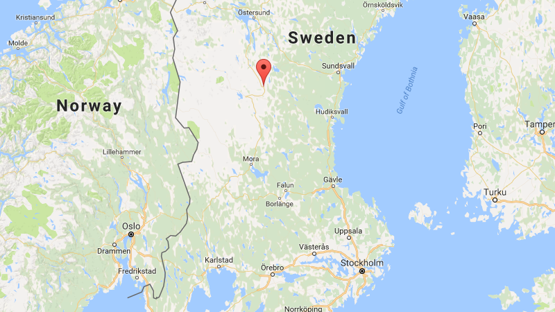

Strombacken
Retreat and Healing Center
Strombacken spiritual retreat and healing center is located in north-central Sweden.
For several summers, Ozay has worked on restoring the main house and barn, so that they can serve those who will benefit from spiritual practice in quiet, forested surroundings.
Ahiranta bought the property in Sweden in September 2004, following guidance received in meditation. It was built in 1869 and consists of a large main house, traditionally built with logs; a barn; a store house; a garage; and a stable, which was added in 1949. The buildings had not been lived in for a decade before the property was acquired for spiritual purposes.
The center was bought with the intention of creating a circle of light, where people who feel the need can spend time away from the society they are used to. This will offer them a time to reflect on life. Once the center is finished, it will reach out, giving spiritual healing to all beings in society who are looking for help and support.
No personal financial gain will be made by any being within or outside this retreat. Funding is coming from the whole to make it possible to reach out to those in spiritual need. Ahiranta and Ozay function as the custodians of this wonderful, secluded retreat in the middle of nowhere in Sweden.
Getting to Stockholm
If you live outside Sweden, the first thing to do is to get to the Swedish capital of Stockholm. There are two airports near Stockholm. Arlanda (airline code ARN) is the big one, located about 37 kilometers (25 miles) north of Stockholm. Arlanda is served by major scheduled airlines such as British Airways (BA), SAS Scandinavian Airlines (SK), Lufthansa (LH), and KLM Royal Dutch Airlines (KL). Skavsta (airline code NYO) is the smaller airport. It is about 100 kilometers (62 miles) south of Stockholm, near the town of Nyköping. Low-cost airline Ryanair flies into Skavsta. Both airports are connected to Stockholm by public ground transportation.
If you want to get to Sweden by train, you can take a Eurostar train from London to Brussels, then Deutsche Bahn Intercity Express (ICE) trains to Köln (Cologne), Odense, and Copenhagen, then Swedish SJ X2000 trains to Malmö and Stockholm.
For car drivers, highway E20 takes you from Copenhagen, Denmark, to Malmö and Helsingborg in Sweden. From there, highway E4 takes you north to Stockholm.
From Stockholm to Ytterhogdal
Stockholm Arlanda has a train station in the basement named Arlanda C. If you go to the Swedish Railways website, you can reserve a combined train and bus ticket from Arlanda C to Ytterhogdal. The train takes you from Arlanda C to the town of Mora in about three hours, and then a country bus takes you from Mora to Ytterhogdal in another three hours or so. This route avoids having to go into downtown Stockholm.
If you are already in downtown Stockholm, a different company (Harjedalingen) has a bus that runs direct from Stockholm Cityterminalen to Ytterhogdal.
If you are driving, you can of course take the E4 and route 83 north from Stockholm to Ytterhogdal in about 5 hours. There are also a few regional airlines in Sweden, such as Nextjet, that operate local flights to smaller towns within Sweden. However, the flights to any given place often operate only a few times each week, once a day at most, and the days and times may not be convenient.